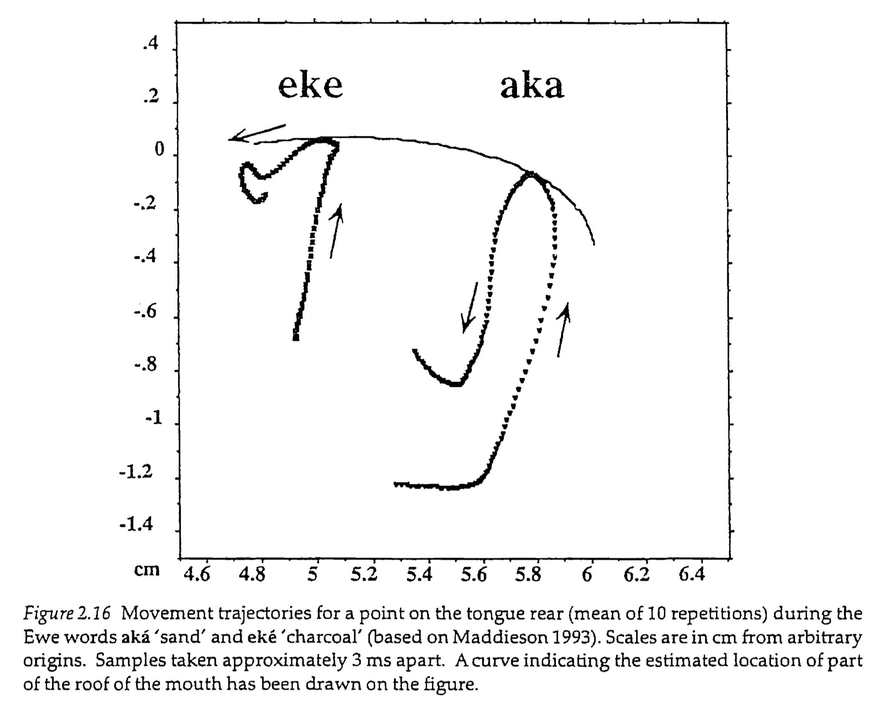
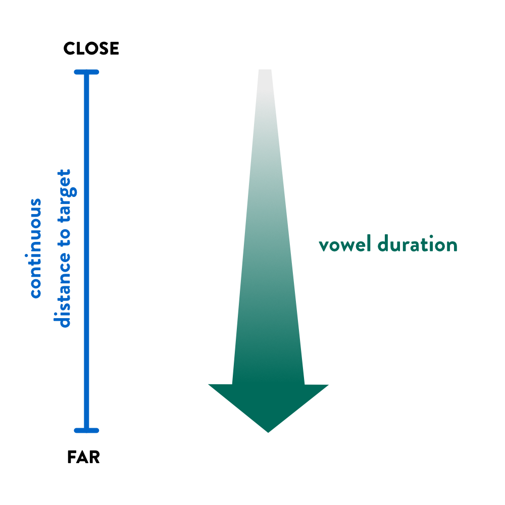
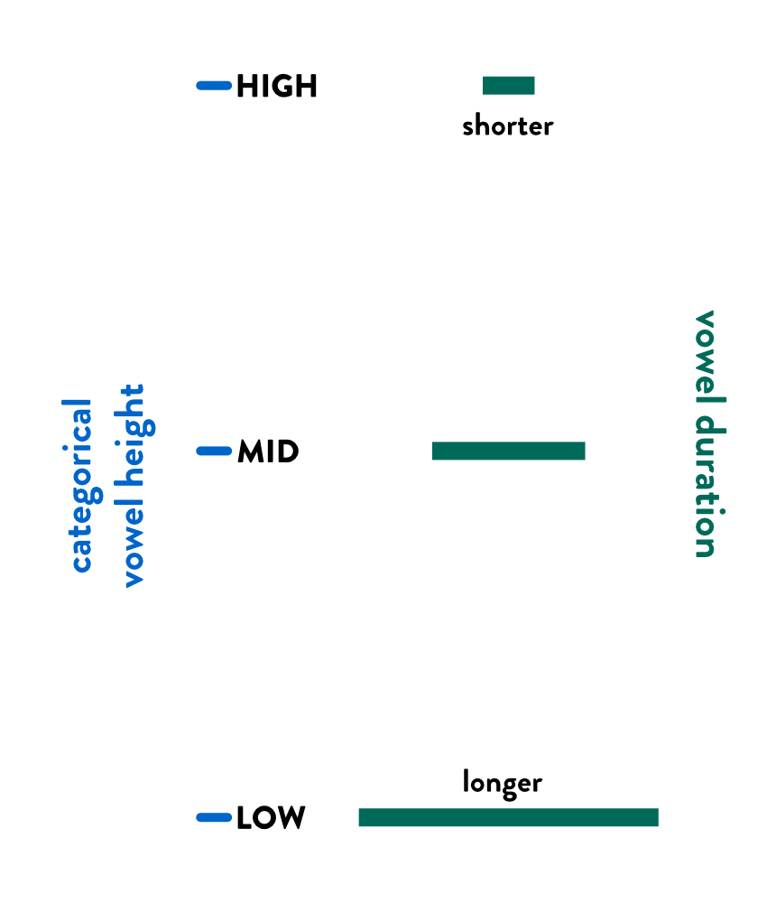
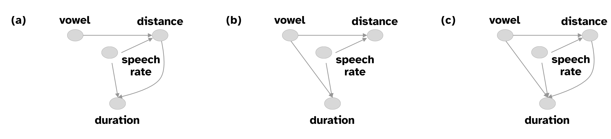
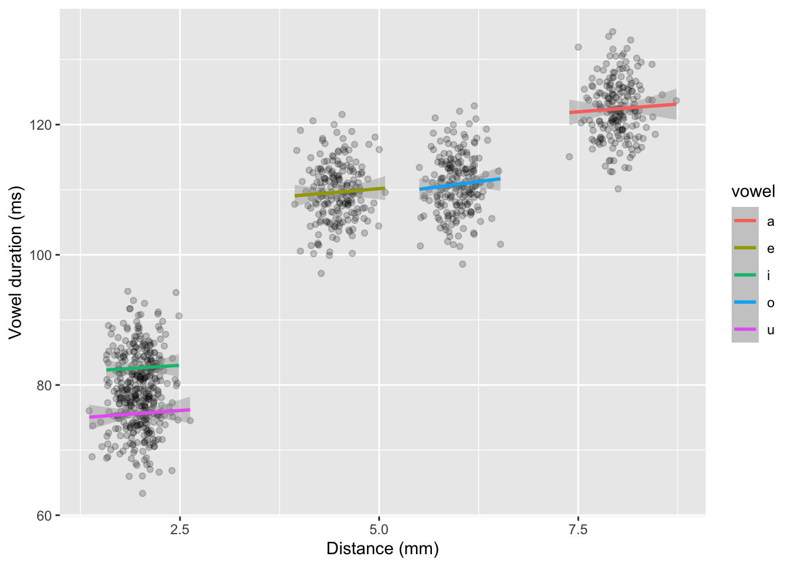
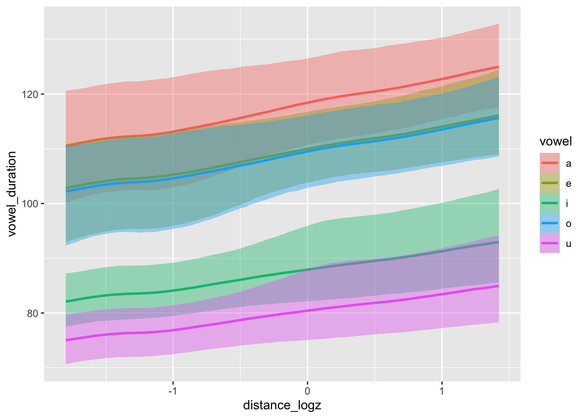

bm <- brm(
vowel_duration ~
0 + vowel +
s(distance_logz) +
s(distance_logz, speaker, by = vowel, bs = "fs", m = 1) +
s(speech_rate_logz, k = 5) +
s(speech_rate_logz, speaker, bs = "fs", m = 1),
family = lognormal
)Data analysis workflow: Part 2
1 Research process cycle: Overview

2 Research questions and hypothesis
Two case studies:
(Week 8) Descriptive and exploratory: Do British infants use a different number of gestures depending on their cultural background?
(This week) Explanatory and corroboratory: vowel duration and gesture distance.
3 Intrinsic vowel duration: Future study
High vowels tend to be shorter than low vowels.
American English in Lieberman and Kubaska 1979, Turk et al. 1994, Tauberer and Evanini 2009, Toivonen et al. 2015, Wilson and Chodroff 2017; Dutch in Bundgaard 1980; Swedish in Toivonen et al. 2015.
4 Distance to target

5 Source of intrinsic vowel duration


6 Variables of interest
| Outcome | Predictors |
|---|---|
| Vowel duration (ms) | Vowel (quality) |
| Distance to vocalic target (mm) | |
| Speech rate (syl/s) |
7 Models of intrinsic vowel duration

8 Research Hypotheses
A. Vowel duration is entirely determined by the distance to vowel target.
B. Vowel duration is entirely determined by stored durational targets.
C. Vowel duration is not entirely determined by distance to vowel target only and stored durational targets are also necessary.
9 Research context overview
| Topic | Intrinsic vowel duration |
| Research problem | There are competing models of gestural duration. |
| Goal | Assessing these models against empirical data. (Comparing the fit of different models) |
| Research question | Which of three possible models of gestural duration are corroborated? |
| Research hypotheses | A. Vowel duration is entirely determined by the distance to vowel target. B. Vowel duration is entirely determined by stored durational targets. C. Vowel duration is not entirely determined by distance to vowel target only and stored durational targets are also necessary. |
10 Causal inference
Causal inference approach: think about the causal relationship of variables to determine statistical models.
Directed Acyclic Graphs, or DAGs.
Demo on DAGitty.
. . .
To learn more about Causal Inference:
Statistical Rethinking, Chapter 6.
11 Regression model
| Inference | Bayesian |
| Model | Regression model |
| Outcome variable | Vowel duration |
| Distribution of outcome | Log-normal |
| Predictors | vowel, distance, speech rate |
| Transformations |
|
| Effect types | non-linear effects for distance and speech rate |
| Coding | indexing |
| Varying effects |
|
12 Regression model: code
13 Statistical hypotheses
A. There is no robust effect of vowel but there is a robust (non-linear) effect of distance.
B. There is a robust effect of vowel but there is no robust effect of distance.
C. There is both an effect of vowel and distance.
14 Simulate data
Check the faux package, although it might not actively developed anymore.
set.seed(9817)
s_n <- 20
rep_n <- 10
vdur_m <- 75
vdur_a <- 20; vdur_e <- 10; vdur_i <- -15; vdur_o <- 10; vdur_u <- -22
dist_a <- 8; dist_e <- 4.5; dist_i <- 2; dist_o <- 6; dist_u <- 2
dist_sd <- 0.2
b_dist <- 0.8
b_sr <- 0.01
sr_m <- 4
# varying duration
dur_spk_sd <- 5
dur_rep_sd <- 2
# varying distance
dist_spk_sd <- 0.05
dist_rep_sd <- 0.05
# varying sr
sr_spk_sd <- 0.005
sr_rep_sd <- 0.005
sigma_sd <- 20
sim_data <- add_random(speaker = s_n) |>
add_within("speaker", vowel = c("a", "e", "i", "o", "u")) |>
add_within("vowel", rep = 1:rep_n) |>
add_ranef("speaker", dur_spk = dur_spk_sd) |>
add_ranef("rep", dur_rep = dur_rep_sd) |>
add_ranef("speaker", dist_spk = dist_spk_sd) |>
add_ranef("rep", dist_rep = dist_rep_sd) |>
add_ranef("speaker", sr_spk = sr_spk_sd) |>
add_ranef("rep", sr_rep = sr_rep_sd) |>
add_ranef(sigma = sigma_sd) |>
add_ranef(sigma_dist = dist_sd) |>
mutate(
distance = case_when(
vowel == "a" ~ dist_a + dist_spk + dist_rep + sigma_dist,
vowel == "e" ~ dist_e + dist_spk + dist_rep + sigma_dist,
vowel == "i" ~ dist_i + dist_spk + dist_rep + sigma_dist,
vowel == "o" ~ dist_o + dist_spk + dist_rep + sigma_dist,
vowel == "u" ~ dist_u + dist_spk + dist_rep + sigma_dist
),
speech_rate = sr_m + sr_spk + sr_rep
) |>
mutate(
vowel_duration = case_when(
vowel == "a" ~ vdur_m + vdur_a + dur_spk + dur_rep + (b_dist * distance) + (b_sr * speech_rate) + sigma_sd,
vowel == "e" ~ vdur_m + vdur_e + dur_spk + dur_rep + (b_dist * distance) + (b_sr * speech_rate) + sigma_sd,
vowel == "i" ~ vdur_m + vdur_i + dur_spk + dur_rep + (b_dist * distance) + (b_sr * speech_rate) + sigma_sd,
vowel == "o" ~ vdur_m + vdur_o + dur_spk + dur_rep + (b_dist * distance) + (b_sr * speech_rate) + sigma_sd,
vowel == "u" ~ vdur_m + vdur_u + dur_spk + dur_rep + (b_dist * distance) + (b_sr * speech_rate) + sigma_sd
),
distance_log = log(distance),
distance_logz = (distance_log - mean(distance_log)) / sd(distance_log),
speech_rate_log = log(speech_rate),
speech_rate_logz = (speech_rate_log - mean(speech_rate_log)) / sd(speech_rate_log)
)15 Simulate data: plot

16 Simulate data: model
bm <- brm(
vowel_duration ~
0 + vowel +
s(distance_logz) +
s(distance_logz, speaker, by = vowel, bs = "fs", m = 1) +
s(speech_rate_logz, k = 5) +
s(speech_rate_logz, speaker, bs = "fs", m = 1),
family = lognormal,
data = sim_data,
cores = 4,
seed = 7162,
file = "cache/data-analysis-workflow-2_bm"
)This took 40 minutes to run and ended in 218 divergent transitions. You would normally also specify priors and try and fix the divergent transitions (and in the case of non-linear effects you might also want to estimate the number of knots before fitting).
17 Simulate data: model summary
conditional_effects(bm, "distance_logz:vowel")
18 Summary
Research context.
Research questions and hypotheses.
Plan study design and analysis in details (here we just scratched the surface).
Simulate data and/or use previous/pilot data to check that the analysis works as intended.
Pre-register the analysis or write a Registered Report.